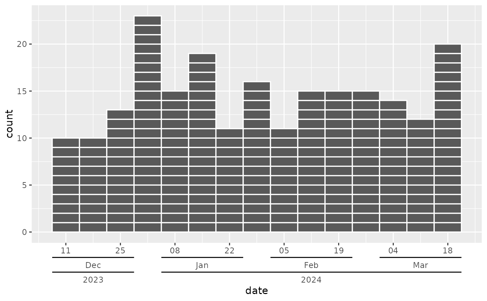
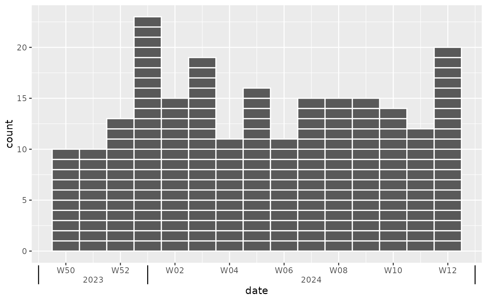
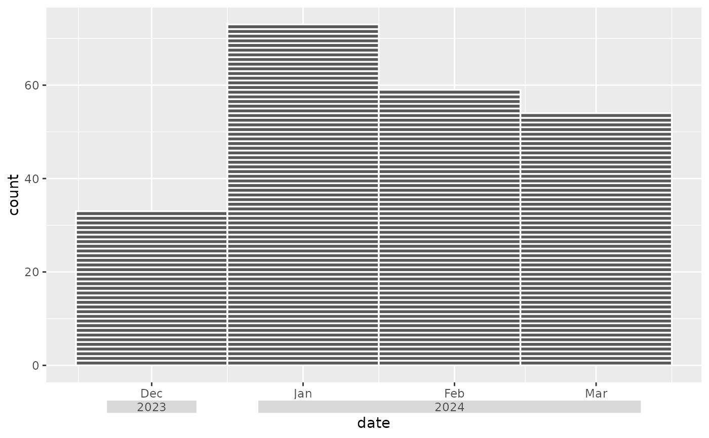
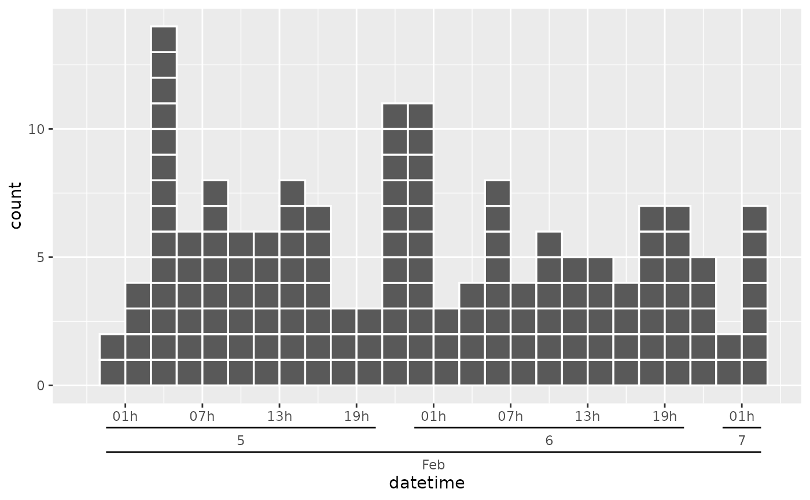

A specialized axis guide for date scales that creates nested axis labels by automatically detecting hierarchical patterns in date labels (e.g., separating day-month from year components). This guide is particularly useful for time series data, where the axis can get crowded when showing the full dates. This is similar to the date scale from Excel.
Usage
guide_axis_nested_date(
sep = "[^[:alnum:]]+",
regular_key = "auto",
type = "bracket",
mode = "simple",
pad_date = NULL,
oob = "none",
...
)Arguments
- sep
A regular expression pattern used to split axis labels into hierarchical components. Default is
"[^[:alnum:]]+"which splits on non-alphanumeric characters.- regular_key
Default is
"auto", which generates the nested axis based on the date labels and the separator above. This option can be used to provide your own specification for the nested key. Seelegendry::key_standard()- type
The visual type of nested axis guide to create. Options include:
"bracket"(default): Creates bracket-style nested labels"fence": Creates fence-style nested labels (like Excel)"box": Creates box-style nested labels
- mode
Processing mode for the guide. Default is
"simple". Currently, this is the only supported mode.- pad_date
Numeric value controlling the padding around date levels, i.e. extending the length of the bracket or box or for correctly positioning the fences. If
NULL(default), automatically sets to 0.5 for "fence" type and 0.25 for other types.- oob
How to handle out-of-bounds values of the scale labels. Default is
"none". Another option is"squish", but this can result in overlapping labels.- ...
Additional arguments passed to
legendry::guide_axis_nested().
Value
A nested axis guide object that can be used with ggplot2::scale_x_date() etc. or ggplot2::guides().
Examples
library(ggplot2)
# Create sample epidemic curve data
epi_data <- data.frame(
date = rep(as.Date("2023-12-15") + 0:100, times = rpois(101, 2))
)
ggplot(epi_data, aes(x = date)) +
geom_epicurve(date_resolution = "week") +
scale_x_date(
date_breaks = "2 weeks", date_labels = "%d-%b-%Y",
guide = guide_axis_nested_date()
)

# Using fence type with ISO week labels
ggplot(epi_data, aes(x = date)) +
geom_epicurve(date_resolution = "week") +
scale_x_date(
date_breaks = "2 weeks", date_labels = "W%V.%G",
guide = guide_axis_nested_date(type = "fence")
)

# Using box type with custom padding
ggplot(epi_data, aes(x = date)) +
geom_epicurve(date_resolution = "month") +
scale_x_date(
date_breaks = "1 month", date_labels = "%b.%Y",
guide = guide_axis_nested_date(type = "box", pad_date = 0.3)
)

# Custom separator for different label formats
ggplot(epi_data, aes(x = date)) +
geom_epicurve(date_resolution = "week") +
scale_x_date(
date_breaks = "1 week", date_labels = "%d-%b-%Y",
guide = guide_axis_nested_date(type = "bracket", sep = "-")
)
# Datetime example with fence type
datetime_data <- data.frame(
datetime = rep(as.POSIXct("2024-02-05 01:00:00") + 0:50 * 3600,
times = rpois(51, 3)
)
)
ggplot(datetime_data, aes(x = datetime)) +
geom_epicurve(date_resolution = "2 hours") +
scale_x_datetime(
date_breaks = "6 hours", date_labels = "%Hh %e.%b",
limits = c(as.POSIXct("2024-02-04 22:00:00"), NA),
guide = guide_axis_nested_date()
)
